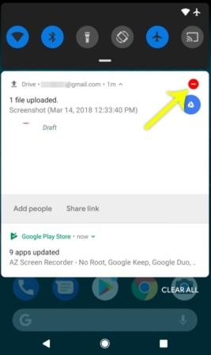

| Android is a Linux-based operating system for mobile devices such as smartphones and tablet computers. It is developed by the Open Handset Alliance led by Google. The Android Open Source Project (AOSP) is led by Google, and is tasked with the maintenance and development of Android. | |
| Enterprise / Developer: | |
| App Store: | Google Play Store |
| Number of applications: | ~ 2.000.000 |
| OS Kernel: | Linux |
| Version: | Android 9.0 Pie |
| Version release date: | Monday, August 6, 2018 |
Google’s big mobile software update for 2018 is Android 9 Pie, or ‘P’. And it’s out for Google’s own Pixel phones. That includes the original Pixel and Pixel XL, plus the Pixel 2 and Pixel 2 XL. Expect to see it come running on the upcoming Pixel 3, too.
Top features include a tweaked look, altered volume controls and a new battery mode. I’ve tried these out in Android P’s beta versions, and now the final release.
Google is aiming at making smartphones smarter by making it learn from your habits and adapt according to your preferences.
So Android 9.0 now sports a new mechanism called ‘Adaptive Brightness’ that learns your preferred levels of brightness in different surroundings.
By tracking user adjusted brightness, it will automatically set the screen brightness levels for you.
Google is relying more and more on AI to enrich user experience and its latest example is ‘Adaptive Battery.’ As per the company, it has partnered with DeepMind to get inputs on how to use machine learning for the best battery performance.
It learns to prioritize battery power by observing apps and services you use the most, thereby helping you get the most out of your battery, and make it last for a longer time.
To further improve your battery saving experience, improvements have been made to battery saver feature. Now Android Pie doesn’t wait for an app to be idle and puts an app in standby mode more aggressively. Also, background apps don’t have network access and the limits are applied to all apps–it doesn’t matter if they target Android P or not.
Call recording feature is quite old, but what’s new is its ability to notify all parties whenever a conversation is being recorded.
Once the call recording starts, the system will play a tone at an interval of 15 seconds to alert the other party.
In Android 8.1 Oero, you had the option of simultaneously connecting two devices via Bluetooth. But with Android P, you can pair up to a maximum of five devices. It is important to note that this new feature isn’t for simultaneous playback, however, it works well with the new media panel
Internet browsing works on two protocols: HTTP and HTTPS, with a major difference being the encryption feature of the latter.
But all apps do not use the secure protocol for communication which can expose you to potential dangers.
Now all apps built for Android P will communicate data via HTTPS by default. This will ensure the safety of your data while sending or receiving data from the app’s servers.
The addition of new contextually aware button makes auto-rotation a whole lot easier and is one of the incredibly handy Android features I have seen.
An auto-rotate button appears in the navigation bar when your phone is rotated to an orientation it’s not currently locked to.
Suppose your device is locked to portrait mode and you try to rotate it to landscape, a button appears.
Tapping this button will lock your phone to landscape until you are using that app or you rotate the phone back to portrait mode and touch the button again.
The notification channels on Android P have been revamped and it allows you to block the certain type of notifications from appearing on your phone.
The type of notifications you usually dismiss will now display a red minus sign. Tapping on it will display a message asking if you would like to “Stop notifications” or “Keep showing” them.
We can finally get rid of the annoying mistakes of selecting incorrect text. Android P will now support Zoom lens feature. Basically, when you long press a phrase, it will automatically magnify at the pointer. Not to mention, this will help you read small text and selecting words precisely.
The latest addition to the power menu is the “Enter Lockdown” button. It’s one of the top features of Android P that further boosts the security of your phone.
Once enabled, it disables fingerprint unlocking option which can be quite useful in case any assailant force you or trick you into unlocking your phone.
After launching the mode, you will be required to insert your PIN, password or pattern for any other unlock methods to work again.
‘Slices’ is one of the best Android P features which comes in handy at several places. It lets you perform basic application activities outside the app.
Let’s say you search for ‘Lyft’ in Google Search. An interactive Slice appears on screen that displays price and time for a trip to work so that you can quickly book a ride.
In short, Slices are fully functional UIs that can be embedded externally in other applications to provide a variety of options to the user. This feature, just like tons of other segments in Android, performs a deep analysis of your inputs and contexts to show you the best parts of the apps you use most of the time. It can surely send a chill down your spine.
App Actions is another great feature in Android P that helps you better navigate through the day by giving smart suggestions based on your habits. It can automatically anticipate your next action based on the current action.
For instance, if you connect your headphones to your smartphone, App Actions will ask if you’d like to continue listening to your favorite playlist on Spotify, thus allowing you to skip several steps in the process.
Such actions show up throughout the OS such as Smart Text Selection, the Play Store, Launcher, the Google Search app and the Assistant.
Whether you like it or not, every smartphone manufacturer is following the trend of notch displays. And Google seemed a little unprepared since Android 8.0 had no support for a display cut-out.
Henceforth, Android P features an edge-to-edge screen support with an option to “Stimulate a display with a cut-out.” The new feature will encompass different types of cut out modes like narrow, tall, and wide to suffice different notch dimensions. This option can be found after enabling the developer options. After doing so, follow Developer options > Drawing > Simulate a display with a cutout. Finally, choose the cutout size.
Many of us spend hours on our phones at night before we actually fall asleep. Wind Down will help you curb this habit by switching on Night Light and turning on the Do Not Disturb mode at your chosen bedtime.
Just select the time at which you would like to go to bed, and Android P will fade the screen to grayscale to help you remember to sleep at the selected time.
Meetings and family gathering often demand your full presence, and Android P is going to help you with that through its modified Do Not Disturb mode.
It not only silences the phone calls and notifications but also all the visual interruptions like notifications that frequently pop up on your screen.
Another gesture-based Android Pie feature called ‘Shush’ makes it easier to distance yourself away from calls and notifications by enabling Do Not Disturb mode.
To activate Shush mode, just put your phone face-down on the table, and it automatically enters the DND mode.
Another step towards Digital Wellbeing is the App Timer feature which lets you set time limits on apps you use for a more extended period.
On approaching the time limit, a notification pops out warning you have reached your time limit and the app ‘pauses.’ So with Android P, you can manage your time better and improve your productivity.
It’s easy to lose track of time while you are glued to your phone watching YouTube videos, playing games, or checking out social media. This is why Google has introduced a bunch of features that let you control how you use your phone.
One of them is ‘Dashboard’ which breaks downs phone usage data to show how you spend time on your device. It displays:
Google has redesigned the way you navigate the OS by introducing Gesture Navigation in Android P similar to iPhone X.
Instead of three buttons set on the home screen, there is an option to use a new single home button that allows you to swipe up to view recent apps along with a UI that suggests apps you might use. Sliding too far left and right across the device would showcase recent apps and lets you quickly switch between them.
Android P now supports IEEE 802.11mc WiFi protocol which is also known as Wi-Fi Round-Trip-Time (RTT). It’s one of the best features that Android fans are waiting for.
This new feature enables indoor GPS style tracking by determining your location within a building and facilitating turn-by-turn directions to help you navigate indoors.
It means you can now find your way across short distances within malls and large buildings.